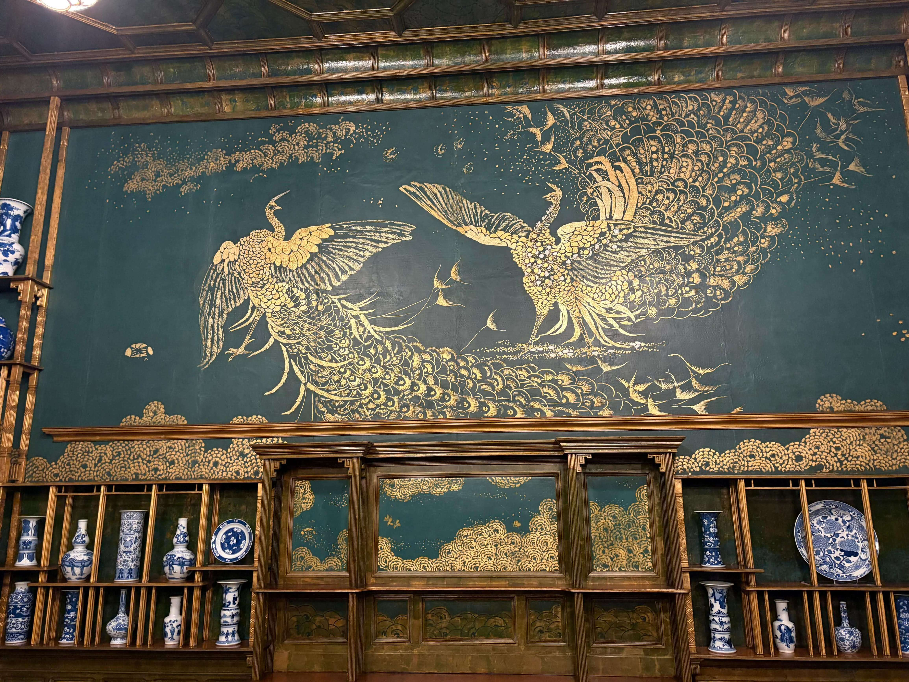

National Museum of Asian Art
Washington, DC · United States
The National Museum of Asian Art, part of the Smithsonian Institution, is one of Washington, DC's most remarkable cultural destinations. Its collections bring together artistic traditions from across Asia and the ancient Near East, offering visitors an opportunity to explore different cultures, historical periods, and artistic expressions. The museum's galleries feature an impressive range of works, including paintings, sculptures, ceramics, textiles, and decorative objects. Many of these pieces reflect the beliefs, daily lives, craftsmanship, and creative achievements of the societies in which they were produced.
Walking through the exhibitions provides a fascinating journey across centuries of art and history. These photographs capture some of the museum's atmosphere and the details I encountered during my visit.
My Photo Gallery
Explore my photographs from the National Museum of Asian Art, featuring its collections, exhibitions, and the cultural details that make this museum a special place to visit in Washington, DC.
View All Photos ↗